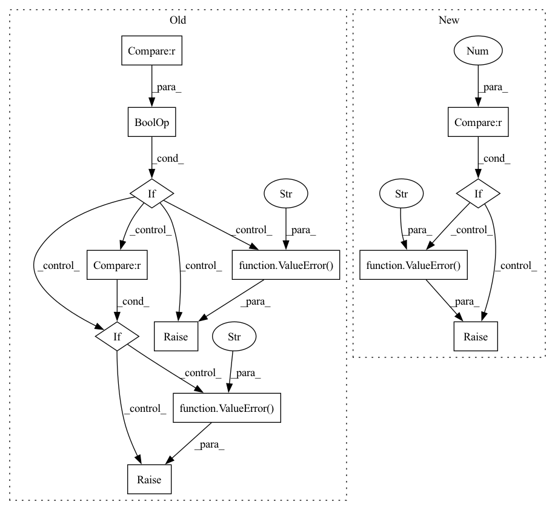

Pattern ID :263
Before Change
raise ValueError("x must be strictly increasing")
if not np.all(diff(y) > 0.0):
raise ValueError("y must be strictly increasing")
if not ((x.min() == x[0]) and (x.max() == x[-1])) :
raise ValueError("x must be strictly ascending" )
if not ((y.min() == y[0]) and (y.max() == y[-1])):
raise ValueError("y must be strictly ascending" )
if not x.size == z.shape[0]:
raise ValueError("x dimension of z must have same number of "
"elements as x")
if not y.size == z.shape[1]:After Change
"elements as y")
if not bbox.shape == (4,):
raise ValueError("bbox shape should be (4,)")
if s is not None and not s >= 0.0 :
raise ValueError("s should be s >= 0.0" )
z = ravel(z)
xb, xe, yb, ye = bbox
nx, tx, ny, ty, c, fp, ier = dfitpack.regrid_smth(x, y, z, xb, xe, yb,In pattern: SUPERPATTERN
Frequency: 3
Non-data size: 13
Instances Fragment ID: 2087327
Project Name: scipy/scipy
Commit Name: 0a25daf47631b50eba9e29a7b2ff5509a51dfea9
Time: 2020-04-26
Author: asakai.amsl+github@gmail.com
File Name: scipy/interpolate/fitpack2.py
M Class Name: RectBivariateSpline
N Class Name: RectBivariateSpline
M Method Name: __init__(8)
N Method Name: __init__(8)
M Parent Class: BivariateSpline
N Parent Class: BivariateSpline
M File Name: scipy/interpolate/fitpack2.py
N File Name: scipy/interpolate/fitpack2.py
M Start Line: 1175
M End Line: 1179
N Start Line: 1208
N End Line: 1225
Before Change
ValueError: If phase not in self.phases.
ValueError: If metric.compute() return tensor with non zero shape.
if phase not in self.phases :
raise ValueError(f"Incorrect epoch setting. "
f"Please choose one of enum value {self.phases}" )
log = {}
for metric_with_utils in self.__phase2metrics[phase]:
metric_value = metric_with_utils.compute()After Change
raise ValueError(f"{metric_with_utils.log_name} must compute number value, "
f"not torch tensor with shape {metric_value.shape}.")
// If it numpy array with wrong shape.
if isinstance(metric_value, np.ndarray) and len(metric_value.shape) != 0 :
raise ValueError(f"{metric_with_utils.log_name} must compute number value, "
f"not numpy array with shape {metric_value.shape}." )
// If it numpy array with one element but wrong dtype
if (isinstance(metric_value, np.ndarray) and len(metric_value.shape) == 0 and
np.issubdtype(metric_value.dtype, np.number)):
raise ValueError(f"{metric_with_utils.log_name} must compute number value, "
f"not numpy array element with dtype {metric_value.dtype}." )
is_number = isinstance(metric_value, numbers.Number)
// If not numeric type.
if not (is_number or isinstance(metric_value, Tensor) or isinstance(metric_value, np.ndarray)): Fragment ID: 2087325
Project Name: eora-ai/torchok
Commit Name: d8c48d17577a0f16e28022ba1ead8e9e07e7f62f
Time: 2022-05-05
Author: rashit.bayazitov.1995@gmail.com
File Name: src/metrics/metric_manager.py
M Class Name: MetricManager
N Class Name: MetricManager
M Method Name: on_epoch_end(2)
N Method Name: on_epoch_end(2)
M Parent Class: nn.Module
N Parent Class: nn.Module
M File Name: src/metrics/metric_manager.py
N File Name: src/metrics/metric_manager.py
M Start Line: 170
M End Line: 180
N Start Line: 165
N End Line: 187
Before Change
raise ValueError(f"{metric_with_utils.log_name} must compute number value, "
f"not torch tensor with shape {metric_value.shape}.")
// If it numpy array with wrong shape.
if isinstance(metric_value, np.ndarray) and len(metric_value.shape) != 0 :
raise ValueError(f"{metric_with_utils.log_name} must compute number value, "
f"not numpy array with shape {metric_value.shape}." )
// If it numpy array with one element but wrong dtype
if isinstance(metric_value, np.ndarray) and len(metric_value.shape) == 0 and\
np.issubdtype(metric_value.dtype, np.number):
raise ValueError(f"{metric_with_utils.log_name} must compute number value, "
f"not numpy array element with dtype {metric_value.dtype}." )
is_number = isinstance(metric_value, numbers.Number)
// If not numeric type.
if not (is_number or isinstance(metric_value, Tensor) or isinstance(metric_value, np.ndarray)):After Change
if self.is_number(metric_value_d):
metric_value[f"{phase.value}/{metric_with_utils.log_name}_{metric_name_d}"] = metric_value_d
// If there is no numeric value
if len(metric_value) == 0 :
raise ValueError(f"Metric manager on_epoch_end method. Metric {metric_with_utils.log_name}"
f"return dict with has no numeric values." )
log.update(metric_value)
elif self.is_number(metric_value):
metric_key = f"{phase.value}/{metric_with_utils.log_name}"
log[metric_key] = metric_value Fragment ID: 2087369
Project Name: eora-ai/torchok
Commit Name: c2fc24fbea4374c237f2164b01b38d617ba7b685
Time: 2022-09-01
Author: Sitcebelly
File Name: torchok/metrics/metrics_manager.py
M Class Name: MetricsManager
N Class Name: MetricsManager
M Method Name: on_epoch_end(2)
N Method Name: on_epoch_end(2)
M Parent Class: nn.Module
N Parent Class: nn.Module
M File Name: torchok/metrics/metrics_manager.py
N File Name: torchok/metrics/metrics_manager.py
M Start Line: 125
M End Line: 147
N Start Line: 132
N End Line: 151